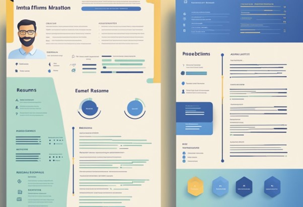

Resume for Freshers: Tips and Examples
Resume writing can be a daunting task, especially for freshers who are just starting their careers. A resume is a document that summarizes an individual's education, work experience, skills, and achievements. It is the first impression that an employer has of a candidate and can make or break their chances of getting hired. In this article, we will discuss the importance of a resume for freshers and provide tips on how to create a compelling one.
Personal information is the first section of a resume and should include the candidate's full name, contact information, and a professional email address. The educational background section should include the candidate's academic qualifications, including the name of the institution, degree, major, and graduation date. The skills and abilities section should highlight the candidate's relevant skills and abilities that match the job requirements. Internships and projects should be included in the work experience section, along with any part-time or full-time jobs. Certifications and achievements should also be included to showcase the candidate's accomplishments. Finally, the references section should include the names and contact information of three professional references.
Key Takeaways
- A resume is a crucial document that summarizes an individual's education, work experience, skills, and achievements.
- The personal information, educational background, skills and abilities, work experience, certifications and achievements, and references are the essential sections of a resume.
- Freshers can create a compelling resume by highlighting their relevant skills, abilities, and achievements, and tailoring their resume to match the job requirements.
Personal Information
The personal information section of a resume for freshers is where they provide their basic contact details. This section should be placed at the top of the resume and should include the following information:
- Full Name
- Address
- Phone Number
- Email Address
It is important for freshers to ensure that their personal information is accurate and up-to-date. Any mistakes in this section can result in missed opportunities or miscommunication with potential employers.
Freshers should also ensure that their email address is professional and appropriate for use in a professional setting. It is recommended that they use their full name or a combination of their name and initials in their email address.
In addition to the basic contact details, freshers may also include their LinkedIn profile URL in this section. This can help potential employers learn more about them and their professional background.
Overall, the personal information section of a resume for freshers is a simple but important section that should not be overlooked. It provides potential employers with the necessary contact details to reach out to the candidate and should be presented in a clear and professional manner.
Educational Background
For freshers, the educational background section is one of the most important parts of a resume. It should include all the relevant educational qualifications, including degrees, diplomas, and certifications. The order should be from the most recent to the oldest degree.
It is important to mention the name of the institution, location, and the field of study. If the candidate has achieved any academic recognition, such as honours, awards, or scholarships, it should be mentioned in this section.
If the candidate has a high GPA (above 6.5), it can be included in this section. However, if the GPA is below 4.5, it is better to leave it out.
Here is an example of how to format the educational background section:
| Degree | Institution | Location | Field of Study | Year of Graduation |
|---|---|---|---|---|
| Bachelor of Engineering | ABC College of Engineering | XYZ City | Computer Science | 2022 |
| Higher Secondary Certificate | XYZ School | XYZ City | Science | 2018 |
| Secondary School Certificate | XYZ School | XYZ City | - | 2016 |
In this example, the most recent degree is a Bachelor of Engineering in Computer Science from ABC College of Engineering. The candidate has also mentioned their Higher Secondary Certificate and Secondary School Certificate, which shows their educational background from the earliest level.
Overall, the educational background section is an important part of a resume for freshers. It should be clear, concise, and highlight the candidate's academic achievements.
Skills and Abilities
When crafting a resume for freshers, it's essential to highlight both technical skills and soft skills to present a well-rounded profile.
Technical Skills
In this section, freshers should showcase their proficiency in specific tools, technologies, programming languages, or any other technical expertise relevant to their field. Utilizing a table format or bullet points can effectively display these skills, providing a clear overview for potential employers.Soft Skills
Soft skills encompass personal attributes and interpersonal abilities that are valuable in the workplace. Freshers should emphasize skills such as communication, teamwork, adaptability, problem-solving, and time management. Employing bold or italic formatting can draw attention to these essential qualities, ensuring they are easily noticed by recruiters.Internships and Projects
Internships and projects are a crucial aspect of a fresher's resume. They showcase the candidate's practical skills, ability to work in a team, and willingness to learn. Including internships and projects in a resume can help a fresher stand out from the crowd and increase their chances of getting hired. When listing internships and projects in a resume, it is essential to provide detailed information about the role and responsibilities. This information can be presented in a table format, making it easier for the recruiter to scan through the resume. The table should include the name of the organization, duration of the internship/project, and key responsibilities. It is also important to highlight any accomplishments or achievements during the internship/project. This can be done by using bold or italic font to draw attention to the specific achievements. For example, if a fresher developed a new feature for a software application during an internship, they should highlight this in their resume. In addition to internships and projects, a fresher can also include any relevant coursework or certifications. This can help demonstrate their knowledge and expertise in a particular subject area. For example, if a fresher is applying for a software development role, they can highlight any coursework or certifications related to programming languages or software development tools. Overall, including internships, projects, coursework, and certifications in a resume can help a fresher showcase their skills and knowledge to potential employers. It is important to present this information in a clear and concise manner, using formatting such as tables, lists, bold, and italic to make the resume easy to read and understand.
Certifications and Achievements
When it comes to creating a resume, highlighting certifications and achievements can make a big difference for freshers. Certifications can show that the candidate has taken the initiative to improve their skills and knowledge in a specific area. Meanwhile, achievements demonstrate the candidate's ability to deliver results and add value to previous employers. To list certifications on a resume, freshers should create a separate section and include the full title of the certificate, the issuing organization, and the date of completion. This section should be formatted consistently with the rest of the resume, using the same font and text size. When listing achievements, freshers should consider the job requirements and study the industry to determine which accomplishments are most relevant. They can then compile a list of all their recognitions and awards and decide which ones to include on the resume. Achievements can be listed in bullet points, using action verbs to describe the accomplishment and quantify the results. For example, a media buying specialist could list achievements such as managing a monthly ad budget of over $20,000 and maintaining an ad spend ROI of 1.8 for Company X's ad campaigns over the past 3 months. They could also mention how they managed to reduce Company X's search ads average CPC while maintaining the same conversion rate, saving them $2k in monthly ad spend. In addition to certifications and achievements, freshers should also include relevant skills and experiences on their resume. This can include problem-solving skills, teamwork and collaboration, adaptability, communication skills, and technical proficiency with specific software or tools. By highlighting their strengths and accomplishments, freshers can make a strong impression on potential employers and increase their chances of landing their dream job.
References
When creating a resume, including a references section can be beneficial for freshers. It provides potential employers with additional insights into the candidate's qualifications and character. However, it's important to note that including references is optional and may not always be necessary for entry-level positions. Freshers should consider including references from academic sources such as professors, advisors, or mentors, as well as individuals from volunteer work or internships. These individuals can speak to the candidate's work ethic, skills, and potential, which can be valuable for employers. It's essential to seek permission from the individuals before listing them as references and to ensure that their contact information is accurate. Additionally, freshers should maintain a separate document with a comprehensive list of references, including their full names, titles, contact information, and the nature of their relationship to the candidate. This organized approach can streamline the hiring process and demonstrate professionalism to potential employers.
Frequently Asked Questions
1. What are the essential skills to include on a resume for a fresher?
When crafting a resume, freshers should include skills that are relevant to the job they are applying for. Some essential skills that freshers can include on their resume are problem-solving, teamwork, adaptability, communication skills, and technical proficiency. It is important to mention any specific software or tools that the fresher is familiar with, as this can be a valuable asset to the employer.
2. How should a fresher craft an effective summary on their resume?
The summary on a fresher's resume should be brief and to the point. It should highlight the fresher's skills, experience, and education. Freshers should focus on their strengths and achievements, and tailor their summary to the job they are applying for. They should also use industry-relevant keywords to make their resume ATS-friendly.
3. What is the most recommended resume format for freshers?
The most recommended resume format for freshers is the functional resume format. This format focuses on the fresher's skills and achievements, rather than their work experience. Freshers can also consider using a combination resume format, which combines elements of both the functional and chronological resume formats.
4. How can freshers create a professional resume using online tools?
Freshers can create a professional resume using a variety of online tools, such as Canva, Novoresume, or Zety. These tools offer a range of customizable templates that freshers can use to create a polished and professional-looking resume. Freshers should also make sure to proofread their resume and ensure that it is error-free.
5. What are the key differences between a CV and a resume for freshers?
The main difference between a CV and a resume for freshers is their length and content. A CV is typically longer than a resume and includes more detailed information about the fresher's education, research, and publications. A resume, on the other hand, is shorter and focuses more on the fresher's skills, achievements, and work experience.
6. What constitutes a simple yet impactful resume for a fresher?
A simple yet impactful resume for a fresher should be easy to read and well-organized. Freshers should use bullet points to highlight their skills and achievements, and avoid using long paragraphs of text. They should also use a clear and legible font, and ensure that their resume is error-free. Freshers should focus on their strengths and tailor their resume to the job they are applying for.